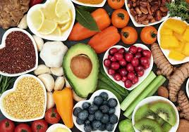

Vegetarianism is the practice of abstaining from the consumption of meat (red meat, poultry, seafood, and the flesh of any other animal), and may also include abstention from by-products of animal slaughter.[1][2] 
Vegetarianism may be adopted for various reasons. Many people object to eating meat out of respect for sentient life. Such ethical motivations have been codified under various religious beliefs, as well as animal rights advocacy. Other motivations for vegetarianism are health-related, political, environmental, cultural, aesthetic, economic, or personal preference. There are variations of the diet as well: an ovo-lacto vegetarian diet includes both eggs and dairy products, an ovo-vegetarian diet includes eggs but not dairy products, and a lacto-vegetarian diet includes dairy products but not eggs. A strict vegetarian diet – referred to as vegan – excludes all animal products, including eggs and dairy. Avoidance of animal products may require dietary supplements to prevent deficiencies such as vitamin B12 deficiency, which leads to pernicious anemia.[3][4] Psychologically, preference for vegetarian foods can be impacted by one's own socio-economic status and evolutionary factors.